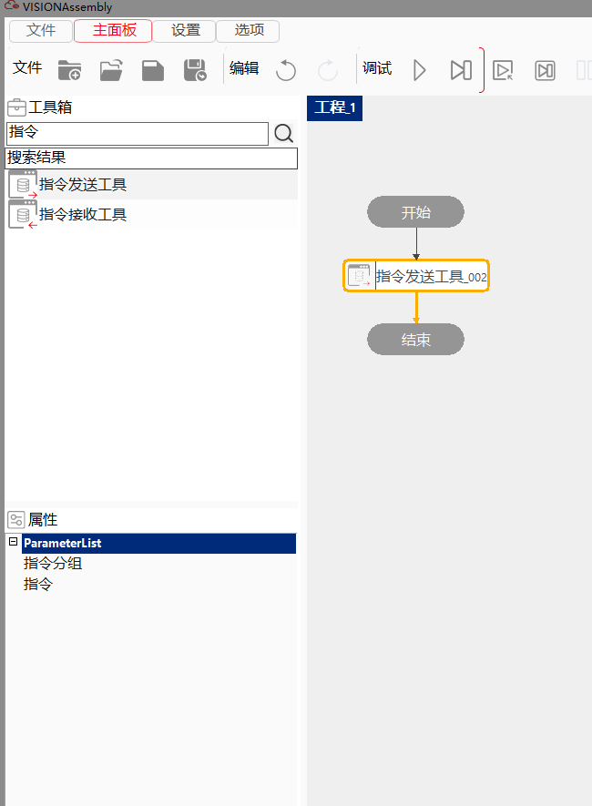
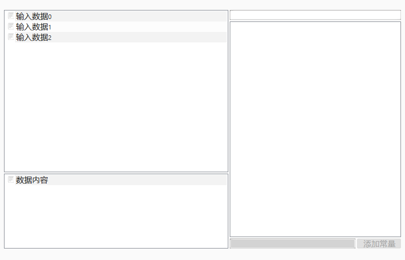

指令接收工具，需要配合通信指令集使用，主要是通过对目标设备端口发送特定格式的数据指令，完成与外部设备的信息交互。
适用于以太网Ehternet Tcp/IP 无协议 和 PLC MX-Competent两种通信方式。
利用网络、串口、寄存器等和其他设备端建立连接，按照通信指令规则将内部数据发送到其他设备端。


| 现象描述 | 解决方法 |
|---|---|
| 工具运行失败 | 1、检查工具的指令分组、指令是否进行设置 |
| 2、检查工具的指令分组是否被删除或重命名（在指令管理中查看） | |
| 3、检查工具设置的指令分组是否设置了通信端口 | |
| 4、检查工具设置的指令分组是否设置了超时参数，工具是否通信超时 | |
| 5、检查通信是否中断，可在指令管理中查看当前分组使用的通信端口 |
| 参数名称 | 参数说明 |
|---|---|
| 指令分组 | 选择指令管理中的某一指令分组。 |
| 指令 | 选择当前指令分组中的某条发送指令。 |
| 参数名称 | 参数说明 |
|---|---|
| 数据内容 | 工具发送到其他设备的数据内容。 |
| 执行结果 | 工具执行结果。 |
| 执行时间 | 工具执行时间。 |
参见“\Samples\指令接收发送工具.gvp”。